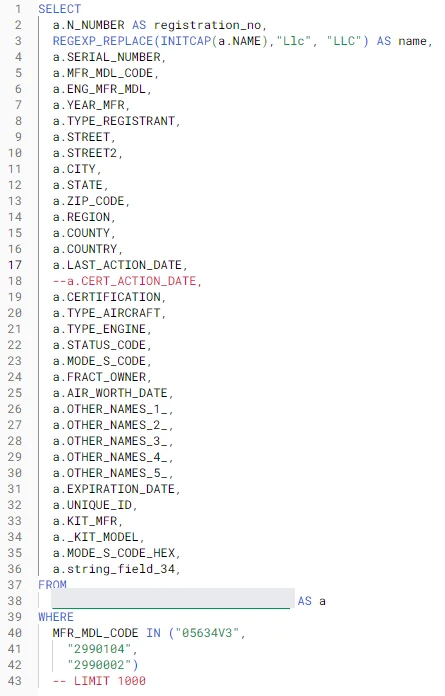
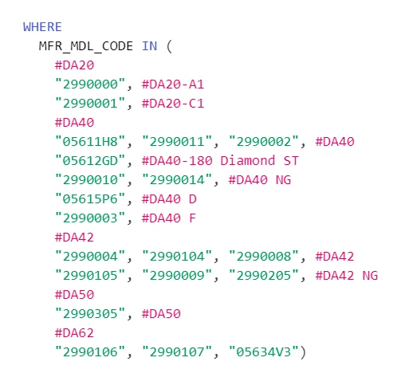

Scope: connect FAA aircraft records to their owners
LifeStyle Aviation CEO John Armstrong asked me to connect FAA aircraft records with their registered owners and then evaluate ways to fill in missing contact fields in the CRM. I used Google BigQuery, a serverless data warehouse, to query and join the data with SQL, and used Google Looker to inspect it. I consulted the lead developer as the work progressed and wrote the SQL used in the project, with some input from my father.
SQL that joins FAA registry files and filters by model
The FAA’s Releasable Aircraft Database includes the Aircraft Registration Master, Aircraft Dealer Applicant, Aircraft Document Index, Aircraft Reference by Make/Model Series/Sequence, Deregistered Aircraft, Engine Reference, and Reserve N-Number files. I focused on linking the relevant datasets, removing duplicate fields, and relating aircraft registrations and model records to the owner name or company and mailing address.
I filtered the master file by manufacturer model code, then expanded the SQL filter to cover the Diamond Aircraft models relevant to LifeStyle Aviation’s distribution business. I no longer have access to the production data lake, so these archived examples show the query, its output structure, and the expanded model filter.


Three data providers tested; BatchLeads chosen
The team planned to sync Odoo CRM records with a cloud data lake through BigQuery’s Python client. Before the next data load, John asked me to survey consumer and business data providers, compare trial enrichment results against the team’s criteria, and document my findings with links to each provider’s API instructions. I evaluated D&B Hoovers, BIGDBM, and BatchLeads. D&B Hoovers initially looked strongest to me. After several weeks of testing, BatchLeads best matched the company’s requirements.
The resulting CRM workflow let staff request missing fields such as phone numbers and email addresses directly from a contact record. The integration used a pay-per-use model for returned information. My work covered the FAA data join, SQL filters, and vendor testing that supported that workflow.